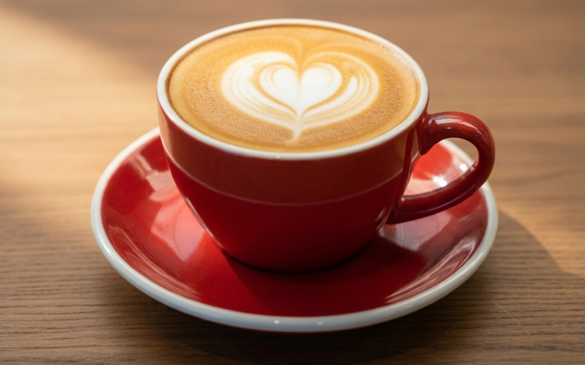
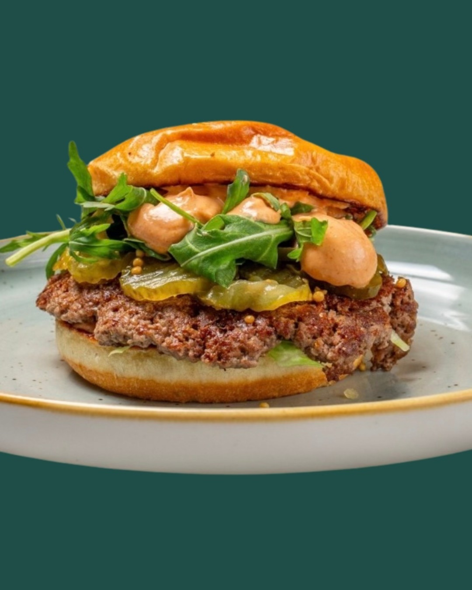
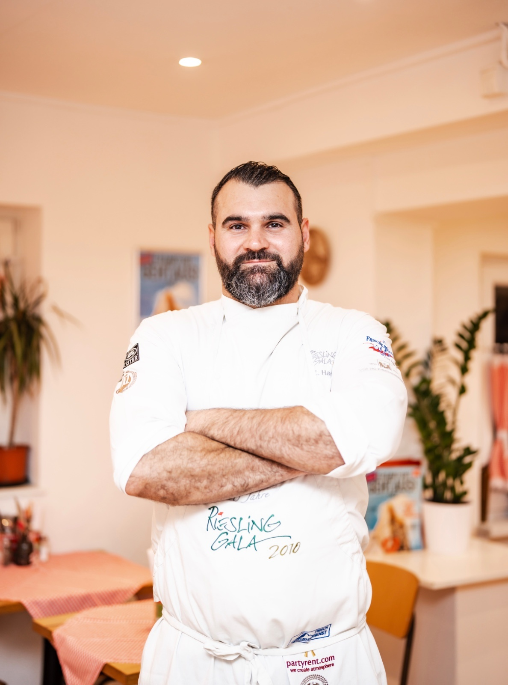
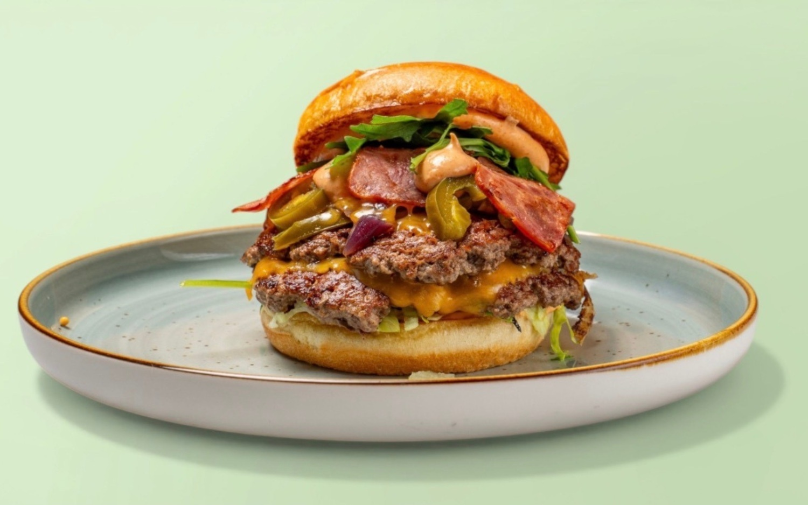
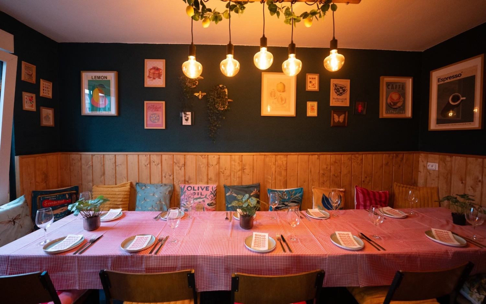
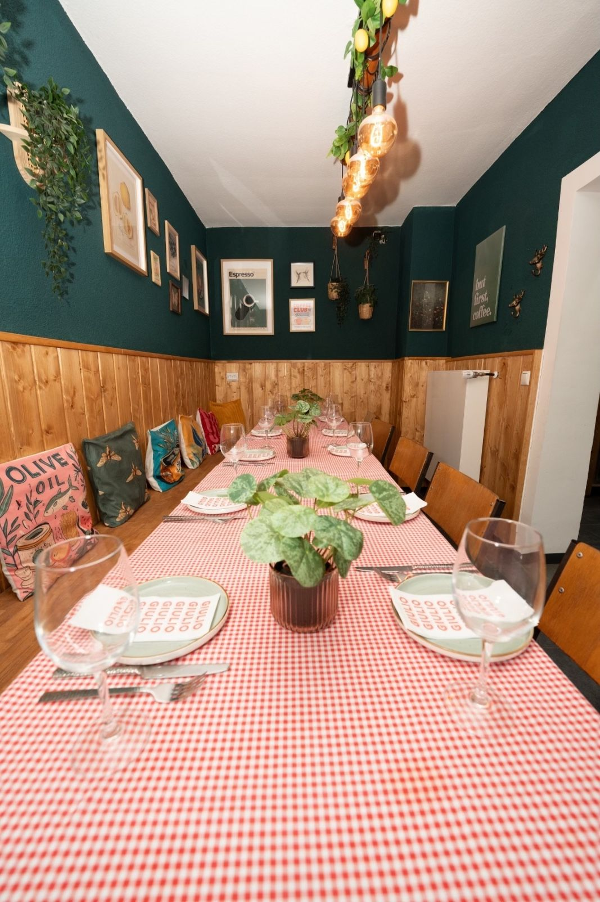
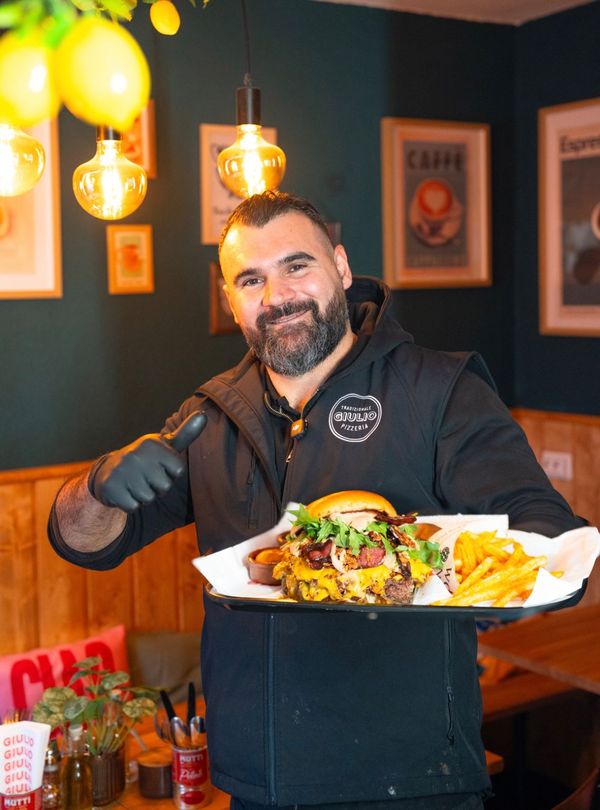

— I
Frühstück & Kaffee
Ofenfrische Croissants, herzhafte Bowls, guter Espresso. Der beste Start in den Tag am Osthafen — werktags ab halb sieben.
Mo–Fr · 6:30 – 14:00Frankfurt · Osthafen · Intzestraße 14
Das Bistro am Frankfurter Osthafen. Frühstück ab halb sieben — und handgemachte Smash Burger aus 100% Halal-Rindfleisch.


Giulio ist nicht nur Pizzabäcker, sondern vor allem gelernter Koch — mit zwanzig Jahren Erfahrung in der Küche. Mit der Eröffnung des Bistros am Frankfurter Osthafen verfolgt er ein eigenständiges Konzept: ein gemütlicher Ort für ein gutes Frühstück, eine entspannte Kaffeepause — und mittags handgemachte Smash Burger vom Grill.
Das Highlight: Montag bis Freitag von 11:00 bis 14:00 Uhr läuft der Grill heiß. Unsere handgemachten Smash Burger aus 100% Halal-Rindfleisch, serviert in fluffigen Brioche-Buns mit hausgemachten Saucen, sind das perfekte Mittagessen am Osthafen.
Kreativität, Leidenschaft und Liebe zum Detail — das macht Giulio und sein Team aus. Wir setzen auf echte Bistro-Qualität statt Fast-Food-Standard. Mit marktfrischen, saisonalen Zutaten überraschen wir unsere Gäste jeden Tag aufs Neue: morgens mit Kaffee und Croissant, ab elf mit saftigen Patties.
„Echtes Handwerk schmeckt man. Bei uns kommt nichts aus der Tüte.”

Ofenfrische Croissants, herzhafte Bowls, guter Espresso. Der beste Start in den Tag am Osthafen — werktags ab halb sieben.
Mo–Fr · 6:30 – 14:00
100% Halal-Rindfleisch, dünn gepresst, knusprig gegrillt. Im fluffigen Brioche-Bun mit hausgemachten Saucen — nur zur Mittagszeit.
Mo–Fr · 11:00 – 14:00


Noch unsicher? Ruf einfach an oder schreib uns — wir antworten meistens innerhalb einer Stunde.
0176 79251066— 05 / Catering
Ob Firmenfeier, Geburtstag oder Hochzeit — wir bringen die Bistro-Küche direkt zu euch. Frische Buffets, Burger-Stationen, Frühstücks-Setups, individuelle Menüs. Schreibt uns einfach, was ihr im Kopf habt.
Catering anfragenGiulio Bistro & Burger ist das Bistro für Frühstück und Smash Burger am Frankfurter Osthafen. Du findest uns in der Intzestraße 14, 60314 Frankfurt am Main — im Stadtteil Ostend, in unmittelbarer Nähe zur Europäischen Zentralbank (EZB), Hanauer Landstraße und Honsellbrücke. Egal ob du auf der Suche nach einem Frühstück in Frankfurt Osthafen bist, einem Halal Burger in Frankfurt für die Mittagspause oder Catering für deine Firmenfeier — wir sind für dich da. Unser Grill läuft Montag bis Freitag von 11 bis 14 Uhr, das Frühstück startet werktags ab 6:30 Uhr. Reservierungsanfragen für Großgruppen nehmen wir ausschließlich per E-Mail entgegen.